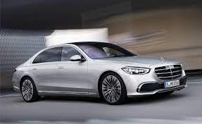
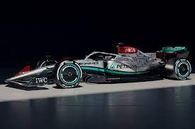

Mercedes




Mercedes Gls 450
anteriormente llamado Clase GL, es un automóvil todoterreno de lujo del segmento F producido por el fabricante alemán Mercedes-Benz desde el año 2006 para la demanda del mercado americano. Tiene cinco o siete plazas, carrocería de cinco puertas, motor delantero longitudinal y tracción a las cuatro ruedas. Usa el mismo chasis monocasco que el Mercedes-Benz Clase M, y tiene como principales rivales al Audi Q7, al BMW X7, al Range Rover y al Lexus LX. El Clase GL se presentó oficialmente en el Salón del Automóvil de Detroit de 2006 y se comenzó a vender en el segundo trimestre de ese año. Se fabrica en Tuscaloosa, Alabama, Estados Unidos.
Mercedes Amg A45
es un automóvil premium del segmento C (en anteriores generaciones fue un monovolumen del segmento B) producido por el fabricante alemán Mercedes-Benz desde el año 1997. Es el primer modelo de la marca con tracción delantera, y todos sus motores son de cuatro cilindros en línea. El Clase A tiene su motor en posición delantera transversal, algo también inusual en los modelos de Mercedes-Benz. El Clase A es el modelo de entrada a la marca.
Mercedes Amg Gt
es un automóvil deportivo Gran Turismo de 2 puertas biplaza, con motor central-delantero montado longitudinalmente y de propulsión trasera o total, desarrollado y producido por el fabricante alemán Mercedes-AMG, filial de Mercedes-Benz Daimler AG, desde 2015.